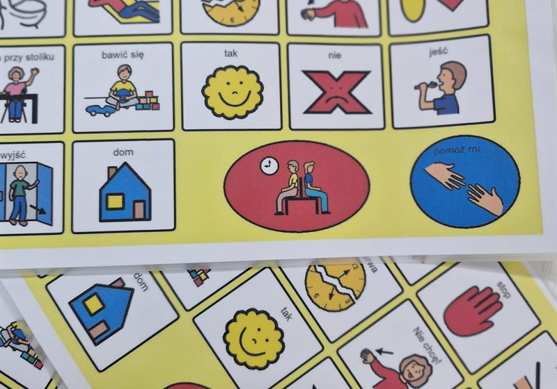
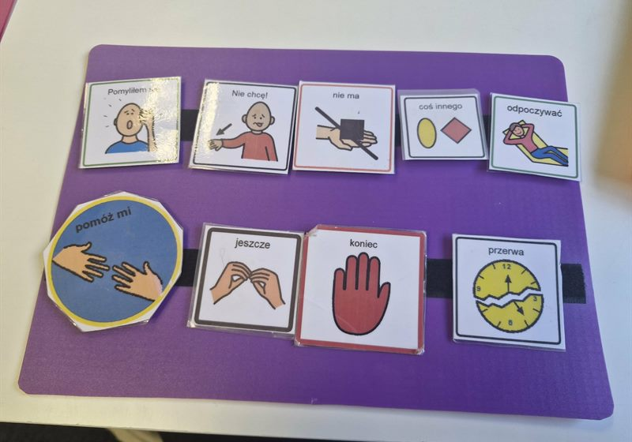
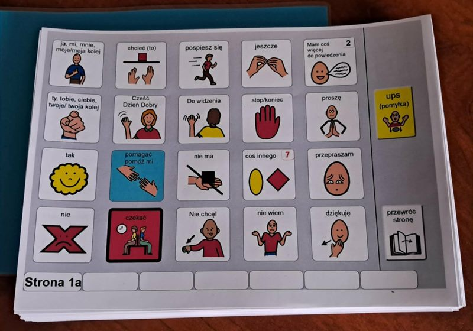
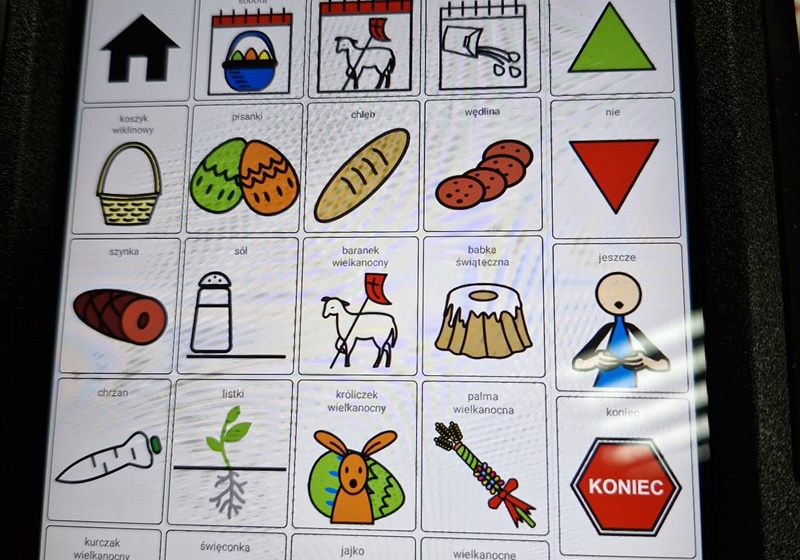
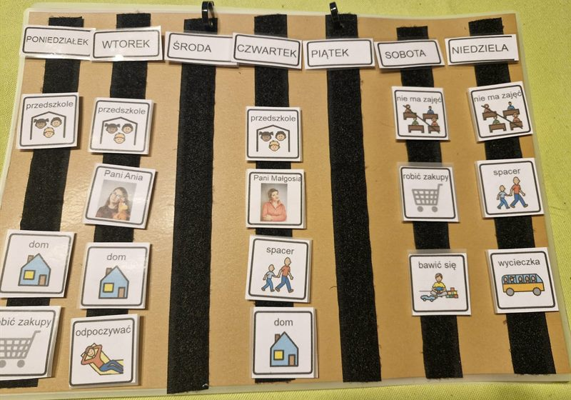
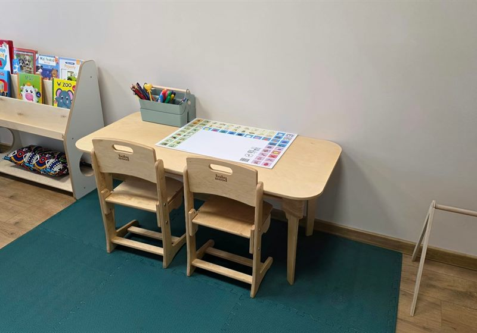
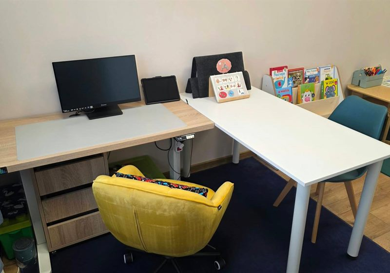
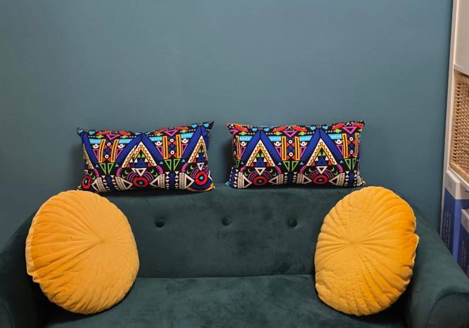

Gabinet w Koninie
Od 1999 roku pracuję z dziećmi i młodzieżą, które nie mówią albo mówią w sposób niezrozumiały dla otoczenia. Szukamy dla nich własnego sposobu na porozumienie się ze światem — symboli, gestów, książki komunikacyjnej albo tabletu, który mówi za nie.
Dla kogo
Nie musisz mieć diagnozy ani gotowej listy pytań, żeby przyjść na konsultację.
Dziecko rozumie więcej, niż potrafi przekazać. Wie, czego chce, ale nie może tego powiedzieć.
W domu wszyscy się domyślają. Poza domem — już nie. Dziecko powtarza, denerwuje się i w końcu przestaje próbować.
Potrafi nazwać przedmioty, a nie potrafi poprosić, zapytać, opowiedzieć, zaprotestować albo po prostu być z kimś w rozmowie.
Ubogi zasób słownictwa i kłopot ze zrozumieniem dłuższych, złożonych poleceń i komunikatów.
Krzyk, płacz, złość, ucieczka. Zachowania jako komunikaty, wynik trudności z porozumiewaniem się.
Dostajesz sprzeczne rady i nie wiesz, od czego zacząć. Umów konsultację — wyjdziesz z konkretnym planem.
Oferta

Sprawdzam, jak dziecko porozumiewa się dziś i co jest dla niego realnym następnym krokiem. Na tej podstawie planujemy terapię.

Nie ma jednego AAC dla wszystkich. Budujemy system dopasowany do konkretnej osoby — jej możliwości ruchowych, wzroku, tempa i tego, o czym naprawdę chce mówić.

Robię je sama, pod konkretne dziecko: indywidualne książki komunikacyjne, foldery osobiste, tablice kontekstowe i tematyczne.

Wprowadzam narzędzia wysokiej technologii — urządzenia z syntezą mowy, Mówik, sterowanie wzrokiem (eye-tracking).

Stymulowanie rozwoju poznawczego i nauka czytania z wykorzystaniem wizualnych technik, które wspierają komunikację i rozumienie.

Zajęcia w diadzie — w parze dwójki dzieci. Dla tych, u których trudne zachowania wiążą się z zaburzeniami komunikacji i brakiem mowy, oraz z kłopotem w respektowaniu norm i zasad społecznych.
Jak to wygląda
Gabinet
Spokojnie, bez nadmiaru bodźców i z miejscem, w którym rodzic może usiąść obok.


Opinie
17 opinii wystawionych przez rodziców na Facebooku — wszystkie pozytywne.
O mnie
Pedagog specjalny, terapeuta AAC, terapeuta wczesnego wspomagania rozwoju. Od 1999 roku pracuję z osobami z autyzmem, z niepełnosprawnością sprzężoną i z niepełnosprawnością intelektualną w różnym stopniu. Od trzynastu lat poddaję swoją pracę superwizjom.
Moją pasją jest wspieranie innych i pomoc w tworzeniu optymalnych warunków rozwoju dla moich podopiecznych.Poznaj mnie bliżej
Napisz kilka zdań o swoim dziecku. Odpowiem szczerze — także wtedy, gdy lepszym rozwiązaniem będzie ktoś inny.
Napisz do mnie